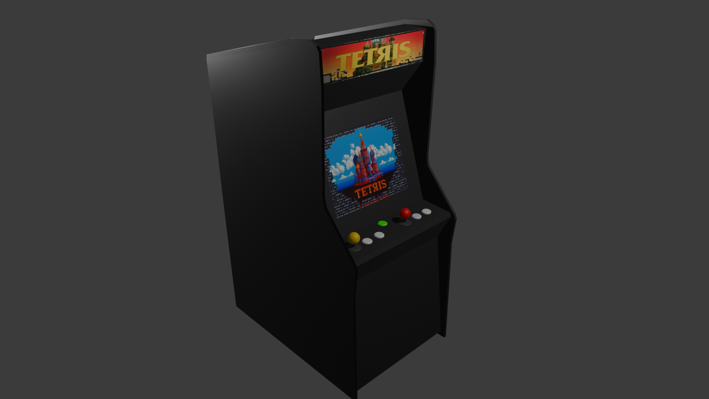
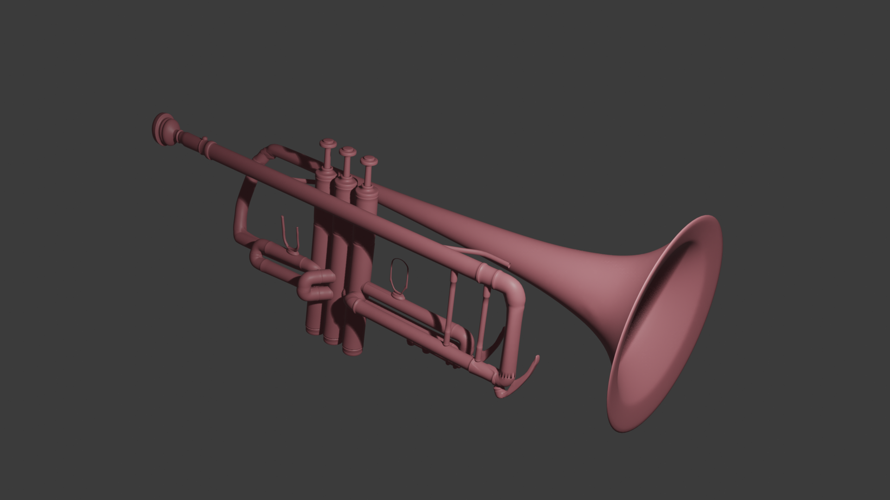
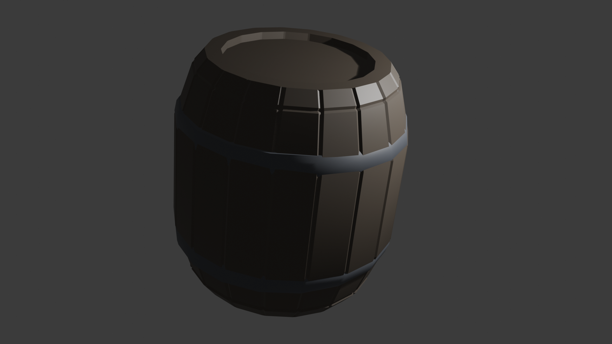
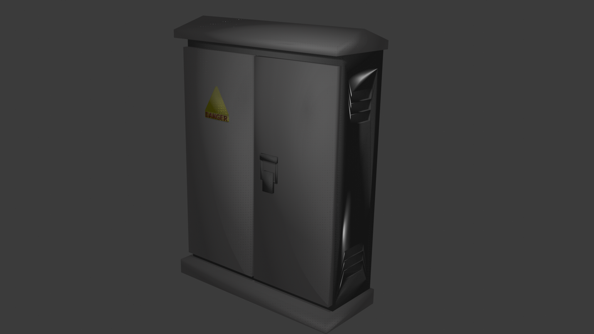
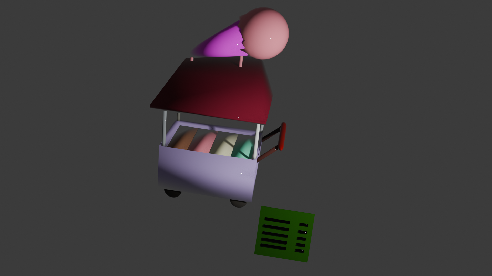
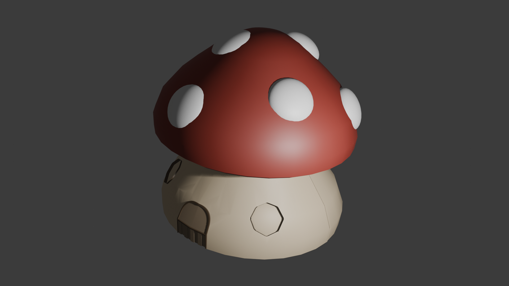
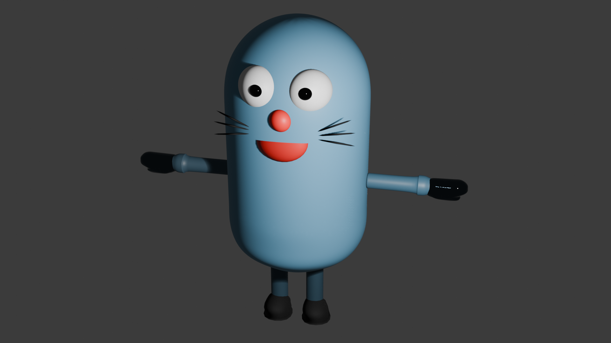
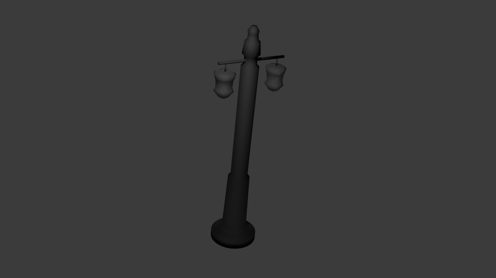
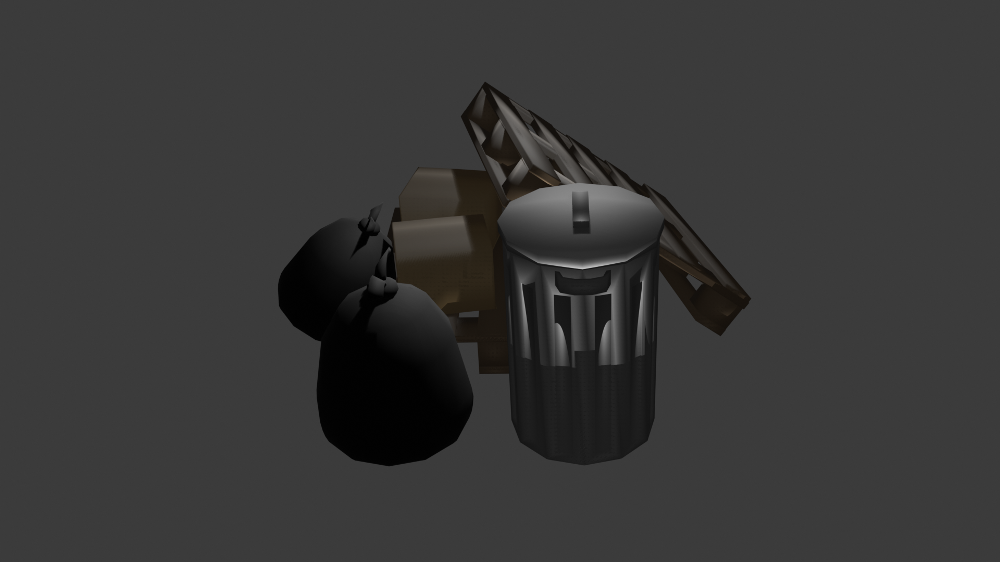
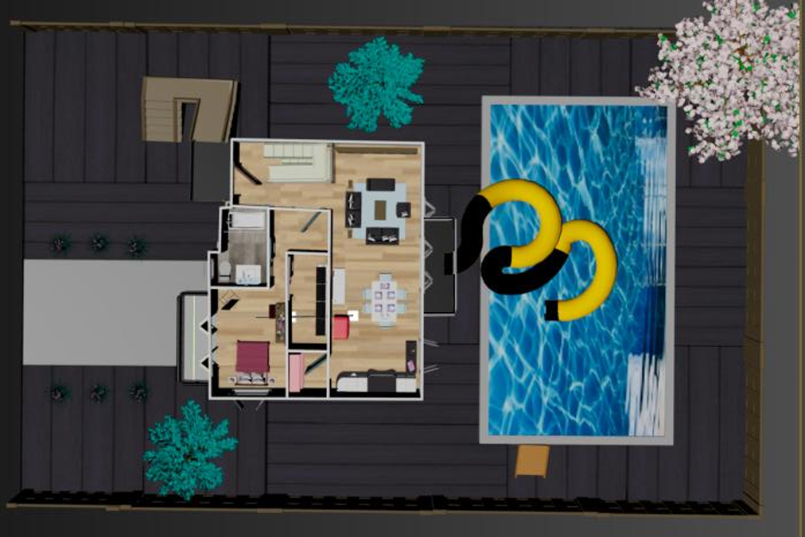

Arcade Machine using Blender

Trumpet using 3ds Max

Barrel using 3ds Max

Electric Transformer using 3ds Max

Ice Cream Stall using Blender

Mushroom house using 3ds Max

My NPC in FYP using 3ds Max

Street Light using 3ds Max

Street Garbage using 3ds Max

This is a 3D model of my dream house, brought to life using 3ds Max. Developed as part of a Virtual Reality (VR) assignment, it highlights my skills in architectural visualization and 3D environment creation.